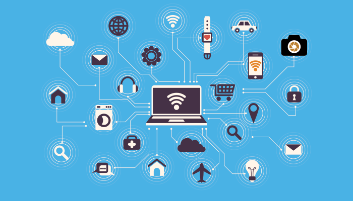
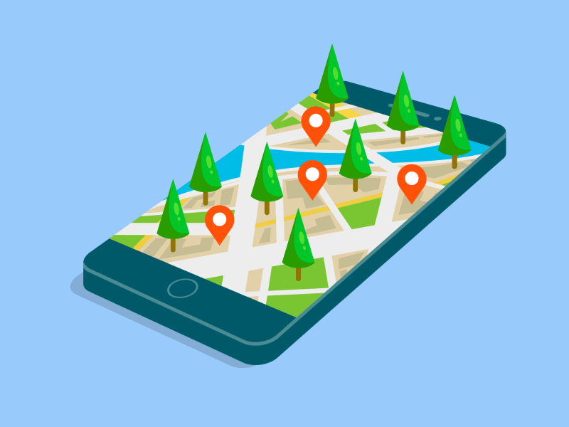
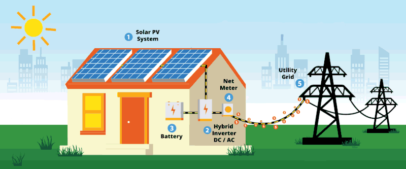
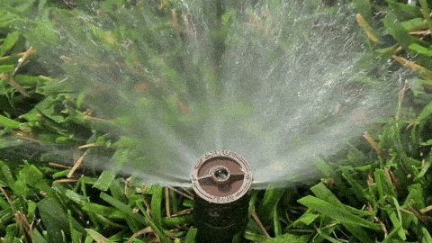

Tecnologias Utilizadas no Campo

🚁 Drones Agrícolas
Monitoramento inteligente das plantações, identificando falhas e pragas.

📡 Sensores IoT
Controle da umidade do solo em tempo real.

🛰️ GPS Agrícola
Plantio mais preciso e redução de desperdícios.

🤖 Inteligência Artificial
Previsão de safras e análise de dados agrícolas.

☀️ Energia Solar
Redução de custos e geração de energia limpa.

💧 Irrigação Inteligente
Economia de água e aumento da produtividade.